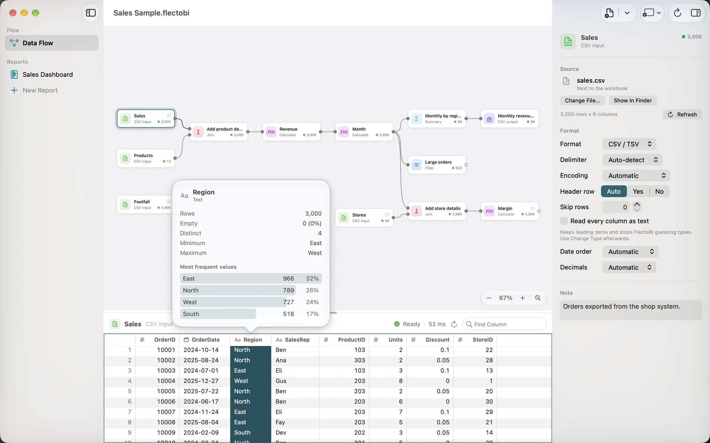

Preview and Column profile
Below the Flow canvas sits the preview grid. It shows the Dataset that comes out of the Step you selected. Because every Step has a preview, you can check your work as you build it, instead of finding a mistake in the final result.
Read the preview
Click a Step. The grid shows its rows. The first Column is the row number. An empty Value is shown as a dimmed ∅.
The bar above the grid shows:
- the Step’s name and kind,
- its size, as rows by columns,
- its state, such as Ready, Running or Failed, with how long it took,
- a refresh button on Inputs,
- the Find Column box.
A Step that has not finished says “Waiting to run…” or “Running”, followed by its name. A Step with a problem says “This Step Has a Problem” and gives the cause. On an Input, Try Again reads it again.
Large Datasets
You do not wait for the whole Dataset. FlectoBI loads pages of 500 rows as you scroll and keeps the recent ones ready. A Dataset of millions of rows scrolls smoothly.
Drag the divider between the canvas and the grid to give the preview more room. FlectoBI remembers where you left it.
Find a Column
Type in Find Column to narrow the grid to the Columns whose names match. The bar says how many match, such as “3 of 40 columns”. If none do, the grid says “No columns match” and offers Clear Search.
Select and copy
- Click a cell to select it.
- Click a row number to select the whole row.
- Click a Column header to select the whole Column.
Press Command-C to copy. You can paste the result into a spreadsheet or a message. Right-click for more:
- Copy copies the selection.
- Copy with Column Names adds the header row.
- Copy Column Name copies just the name.
FlectoBI copies up to 100,000 rows at once. If there are more, it copies the first 100,000 and tells you.
Numbers are copied in a form that other programs understand, with a plain hyphen for a negative number. On screen, FlectoBI shows a true minus sign, such as −2.5K, because it reads better. The difference is only in the look.
The Column profile
The Column profile answers a simple question about one Column: what is in here?
To open it, do one of these:
- Double-click the Column’s header.
- Right-click the header and choose Show Column Profile.
- Select a Column and press Option-Command-P, or use View › Show Column Profile.
A small panel opens. Press Esc to close it.

It shows:
- Rows: how many.
- Empty: how many Values are empty, and what share. For text, an empty string counts as empty.
- Distinct: how many different Values there are. For very large Datasets, above 100,000 rows, this is an estimate and is marked as approximate.
- Minimum and Maximum.
- Mean, for numeric Columns.
- Most frequent values: the top ten, each with its count and a bar for its share. If every Value is different, the panel says so.
The type is at the top, for example Whole number, Decimal, True / false or Date & time. A date-time Column whose Values are all at midnight shows dates only.
Every number in the panel can be selected. Copy one and you get a plain number with a hyphen for a minus.
What to look for
- A high Empty share can mean a bad Join or a wrong header row.
- A Distinct count of one means a Column that never changes.
- A surprising Minimum or Maximum often points to a typo or a wrong unit.
- A number Column that shows as text means a Value somewhere is not a number. Use Change Type.
- “Every value is different” in an ID Column is a good sign. In a Column you wanted to group by, it is a warning.
Dates and time zones
The preview and the Visuals show date-times in UTC. Keep this in mind when a time looks a few hours off from your files.